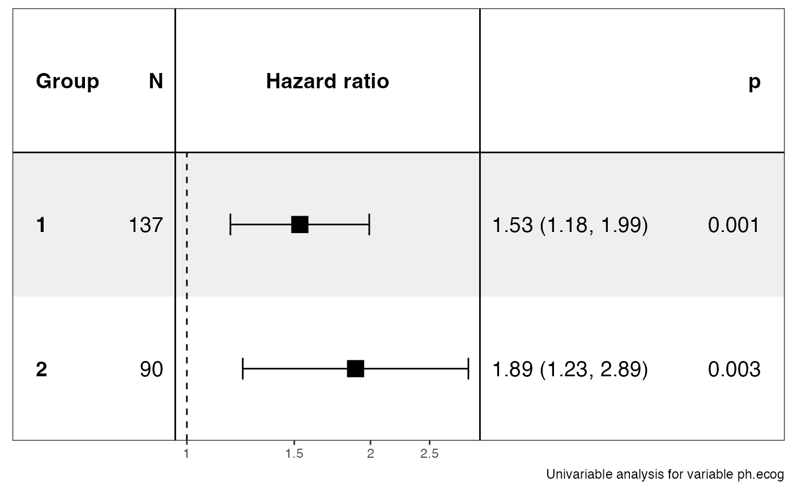
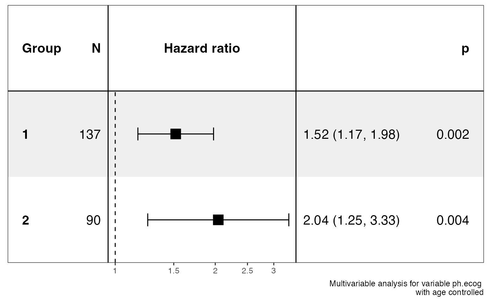

Group Cox Analysis and Visualization
ezcox_group(
data,
grp_var,
covariate,
controls = NULL,
time = "time",
status = "status",
sort = FALSE,
decreasing = TRUE,
add_all = FALSE,
add_caption = TRUE,
verbose = TRUE,
headings = list(variable = "Group", n = "N", measure = "Hazard ratio", ci = NULL, p =
"p"),
...
)a data.frame containing variables, time and os status.
a group column.
a covariable for cox analysis.
column names specifying controls.
The names with pattern "*:|()" will be treated as interaction/combination
term, please make sure all column names in data are valid R variable names.
column name specifying time, default is 'time'.
column name specifying event status, default is 'status'.
if TRUE, sort the models by the HR values.
logical, should the sort order be increasing or decreasing?
if TRUE, add a group for all data rows.
if TRUE, add caption to the plot.
if TRUE, print extra info.
a list for setting the heading text.
other arguments passing to forestmodel::forest_model().
a list.
library(survival)
ezcox_group(lung, grp_var = "sex", covariate = "ph.ecog")
#> => Processing variable 1
#> ==> Building Surv object...
#> ==> Building Cox model...
#> ==> Done.
#> => Processing variable 2
#> ==> Building Surv object...
#> ==> Building Cox model...
#> ==> Done.
#> covariates=NULL but drop_controls=TRUE, detecting controls...
#> No. Skipping...
#> Done.
#> Resized limits to included dashed line in forest panel
#> Returns a list containing data and ggplot.
#> $data
#> $stats
#> # A tibble: 2 × 13
#> Group Variable is_control contrast…¹ ref_l…² n_con…³ n_ref beta HR lower…⁴
#> <chr> <chr> <lgl> <chr> <chr> <int> <int> <dbl> <dbl> <dbl>
#> 1 1 ph.ecog FALSE 1 1 137 137 0.426 1.53 1.18
#> 2 2 ph.ecog FALSE 2 2 90 90 0.637 1.89 1.23
#> # … with 3 more variables: upper_95 <dbl>, p.value <dbl>, global.pval <dbl>,
#> # and abbreviated variable names ¹contrast_level, ²ref_level, ³n_contrast,
#> # ⁴lower_95
#>
#> $models
#> # A tibble: 2 × 6
#> Group Variable control model_file model status
#> <chr> <chr> <chr> <chr> <list> <lgl>
#> 1 1 ph.ecog NA /var/folders/bj/nw1w4g1j37ddpgb6zmh3sfh… <coxph> TRUE
#> 2 2 ph.ecog NA /var/folders/bj/nw1w4g1j37ddpgb6zmh3sfh… <coxph> TRUE
#>
#> attr(,"class")
#> [1] "ezcox"
#>
#> $plot

#>
ezcox_group(lung, grp_var = "sex", covariate = "ph.ecog", controls = "age")
#> => Processing variable 1
#> ==> Building Surv object...
#> ==> Building Cox model...
#> ==> Done.
#> => Processing variable 2
#> ==> Building Surv object...
#> ==> Building Cox model...
#> ==> Done.
#> covariates=NULL but drop_controls=TRUE, detecting controls...
#> Yes. Setting variables to keep...
#> Done.
#> Resized limits to included dashed line in forest panel
#> Returns a list containing data and ggplot.
#> $data
#> $stats
#> # A tibble: 4 × 13
#> Group Variable is_control contra…¹ ref_l…² n_con…³ n_ref beta HR lower…⁴
#> <chr> <chr> <lgl> <chr> <chr> <int> <int> <dbl> <dbl> <dbl>
#> 1 1 ph.ecog FALSE 1 1 137 137 0.419 1.52 1.17
#> 2 1 ph.ecog TRUE age age 138 138 0.0184 1.02 0.996
#> 3 2 ph.ecog FALSE 2 2 90 90 0.714 2.04 1.25
#> 4 2 ph.ecog TRUE age age 90 90 -0.0112 0.989 0.957
#> # … with 3 more variables: upper_95 <dbl>, p.value <dbl>, global.pval <dbl>,
#> # and abbreviated variable names ¹contrast_level, ²ref_level, ³n_contrast,
#> # ⁴lower_95
#>
#> $models
#> # A tibble: 2 × 6
#> Group Variable control model_file model status
#> <chr> <chr> <chr> <chr> <list> <lgl>
#> 1 1 ph.ecog age /var/folders/bj/nw1w4g1j37ddpgb6zmh3sfh… <coxph> TRUE
#> 2 2 ph.ecog age /var/folders/bj/nw1w4g1j37ddpgb6zmh3sfh… <coxph> TRUE
#>
#> attr(,"class")
#> [1] "ezcox"
#>
#> $plot

#>
p <- ezcox_group(lung,
grp_var = "sex", covariate = "ph.ecog",
controls = "age", add_all = TRUE
)
#> => Processing variable 1
#> ==> Building Surv object...
#> ==> Building Cox model...
#> ==> Done.
#> => Processing variable 2
#> ==> Building Surv object...
#> ==> Building Cox model...
#> ==> Done.
#> => Processing variable ALL
#> ==> Building Surv object...
#> ==> Building Cox model...
#> ==> Done.
#> covariates=NULL but drop_controls=TRUE, detecting controls...
#> Yes. Setting variables to keep...
#> Done.
#> Resized limits to included dashed line in forest panel
#> Returns a list containing data and ggplot.